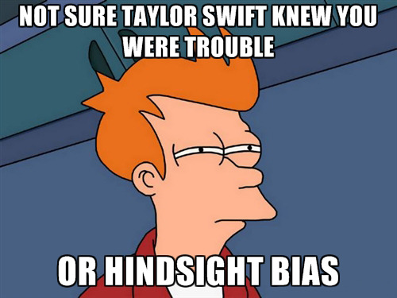
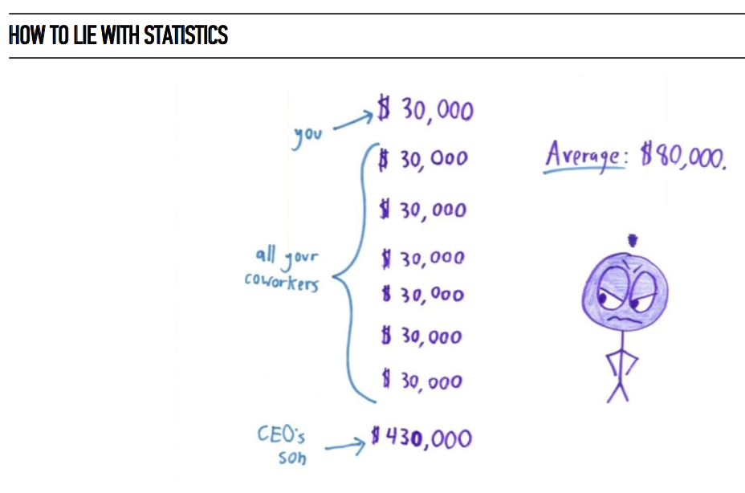
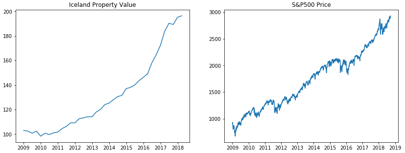
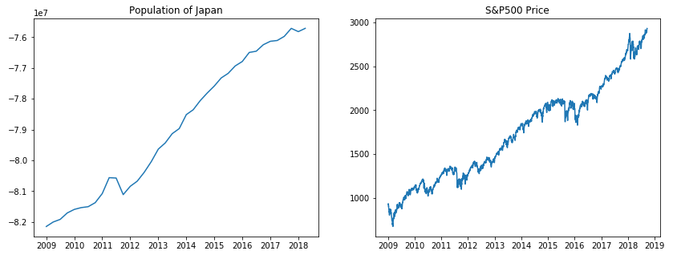

Unusual Economic Indicators
I recently came across another one of those articles (like this one) that presents a list of surprising or unusual economic indicators. By “economic indicator” these articles mean some factor that has predictive power for the health of the economy: by looking at the value of one of these indicators one can, supposedly, intuit the broader economic climate.
When people try to find economic indicators they generally look at well-known factors that economics believe give a good picture of the strength of the economy, indicators like Gross Domestic Product, the rate of inflation/deflation, and the growth/contraction of the stock market. The articles focusing on usual economic indicators look at esoteric factors like the so-called “Buttered Popcorn Index;” the theory goes that people flock to the movies to distract themselves from reality when the economy is poor.
The Narrative Fallacy
The first time I saw one of these articles I assumed it was satirical, but I was wrong – it turns out people actually believe that these factors are predictive of the economy! After spending a few minutes bemoaning that I live in a world where a person can believe that “The hotter the waitress, the closer the economy is to the brink” and still get hired to write articles for Business Insider, I started thinking about the broader implications of these beliefs.
Creating “unusual economic indicators” where they don’t exist is a symptom of the narrative fallacy, or the tendancy for people to see patterns in random data and ascribe casualty where none exists. Combined with the hindsight bias, or the inclination to believe that an event was predictable after the event occurred, the narrative fallacy results in foolhardy decision making based on models overfit to past data.
The problem with the narrative fallacy is that, for whatever reason, we really like to believe in stories and ascribe cause to random data. This trend extends beyond unusual economic indicators and is especially bad in finance – very often you’ll read a news article that attributes the stock market dropping \(0.1\%\) to recent earnings disappointments. The problem is, the stock market generally fluctuates \(\pm1\%\) per day; a \(0.1\%\) drop is well within the bounds of chance and is certainly not attributable to any one particular event.
Many people (generally those without a background in mathematics or statistics) believe that the solution to the problem of separating the signal from the noise is some buzzword term like “statistical analysis” or “backtesting” or “Monte Carlo simulation.” The problem is, statistics are often easy to manipulate and hard to interpret.
To demonstrate, I found some unusual economic indicators of my own. Keep in mind that my entire purpose in this exercise is to find indicators that should in little to no way relate to the health of the US economy. By using a statistical technique called correlation, I found 3 indicators that almost perfectly track the price of the S&P500 since 2009.
Note: correlation is far from perfect, but this doesn’t stop financial analysis from using this exact technique to show that their investments are/are not exposed to risk from changes in the stock market.
The Iceland Property Indicator
Starting off simple, let’s look at how the value of property in Reykjavik, Iceland relates to the S&P500’s prices since 2009.
The indicator: As the charts above clearly show, there is a discernible relationship between Reykjavik housing prices and US stock market performance; both experience a small dip between 2009 and 2010, a slow rebound until 2016, and a sharp increase in value until 2018. Statistical analysis shows a \(94\%\) correlation between Icelandic property value and stock prices.
The explanation: buying property in Iceland is a bit of an arduous process for foreigners, because they need permission from the government before buying any property, proving among other things that they have the financial means to afford the move. This added hassle means that anyone planning a move to Iceland would wait until the economy stabilizes before purchasing Icelandic property. Considering the majority of visitors to Iceland hail from the USA, and that the majority of foreign property buyers are in the market for a second home, it makes sense that the excess wealth created by a healthy US economy would prop up Icelandic housing prices.
The Japanese Population Indicator
The indicator: With a correlation of \(97.6\%\), the population of Japan is an almost perfectly negative indicator of US stock prices – that is to say, when the population of Japan goes down, us stock prices go up with a \(97.6\%\) confidence.
The explanation: Japan’s declining population has resulted in an overall slowing of the Japanese economy. With Japan’s economy growing less, the United States has been able to become increasingly competitive globally, no longer fighting for resources against Japan. This has been the case especially in Asia; Japan’s decreasing economic clout has created space for the US to expand into developing economies in Asia, increasing the strength of the US economy and thereby helping the stock market.
The Iraq Internet Indicator
The indicator: Our strongest indicator, with a whopping \(99.4\%\) correlation to S&P500 prices, is the number of Internet users in Iraq since 2009.
The explanation:The export of Internet technology from the United States to developing economies has been a huge driver of growth in the 21st century. Especially since the widespread adoption of mobile devices with the creation of the iPhone in 2007, US tech companies have dramatically increased their stock prices as they’ve gathered more customers globally. Iraq in particular was effected with the rise of mobile users during and after the Arab Spring.
In Summary
The above three indicators track US stock prices almost perfectly since 2009. This does not mean that you should liquidate your stock portfolio if Japan’s population starts to rise: it means that you should be careful when reading about causal or predictive relationships in the global economy. Often there is no deeper meaning – many of these factors correlate due to chance alone.
Notes
- For further reading into the narrative fallacy and related issues, I cannot recommend Nassim Taleb's The Black Swan highly enough. Taleb coined the term "narrative fallacy" in this book.
- For further reading about the hindsight bias, Daniel Kahneman's Thinking, Fast and Slow is another fantastic resource.
- If you liked the "how to lie with statistics" cartoon, check out the website I stole it from: the well-done but poorly drawn Math with Bad Drawings.
- I found the data for the S&P prices, Japanese population, Iraq internet users, and Iceland property values from the FRED website. It has a large collection of economic data. I used Python and its NumPy package to analyze the data.